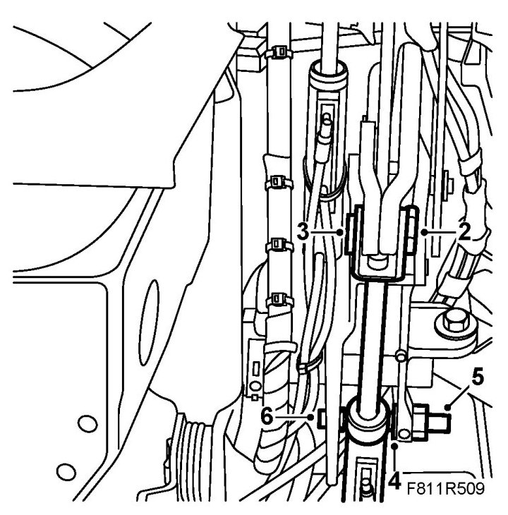
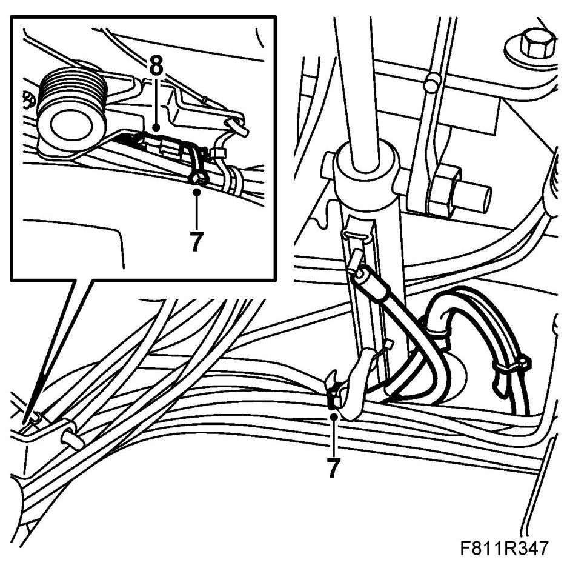
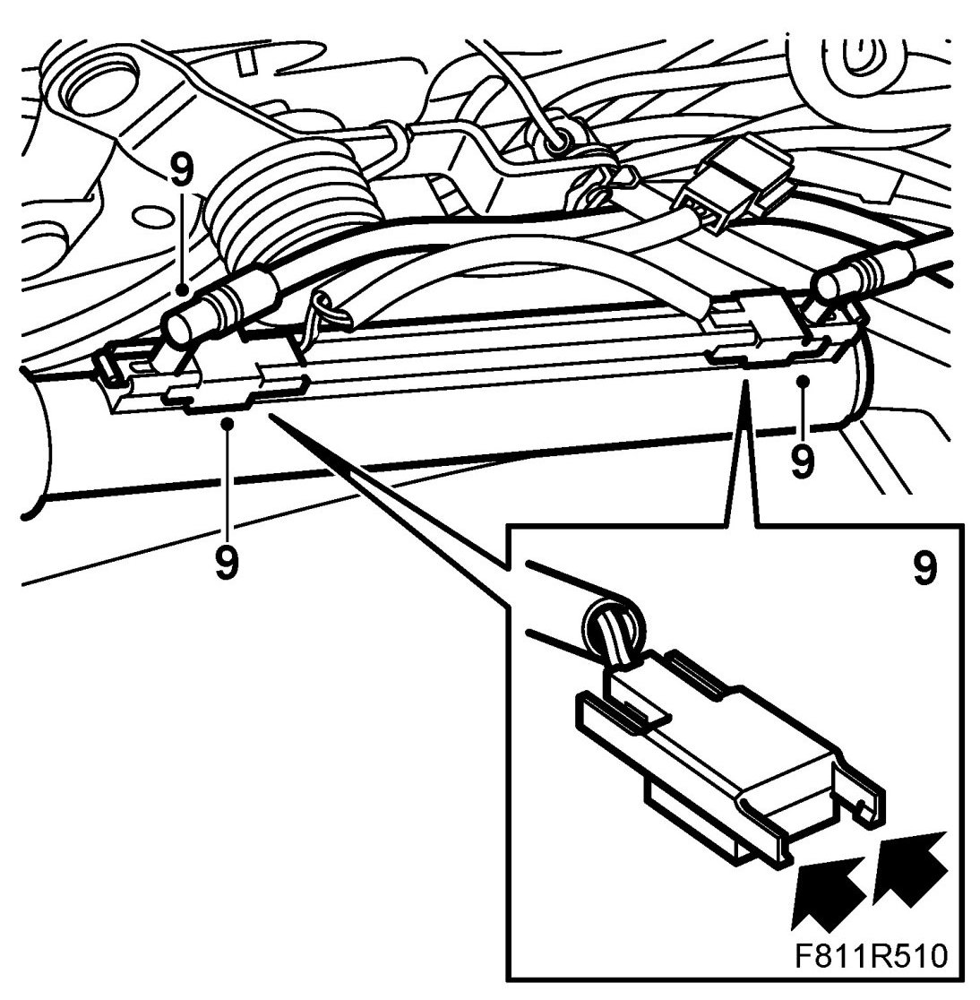
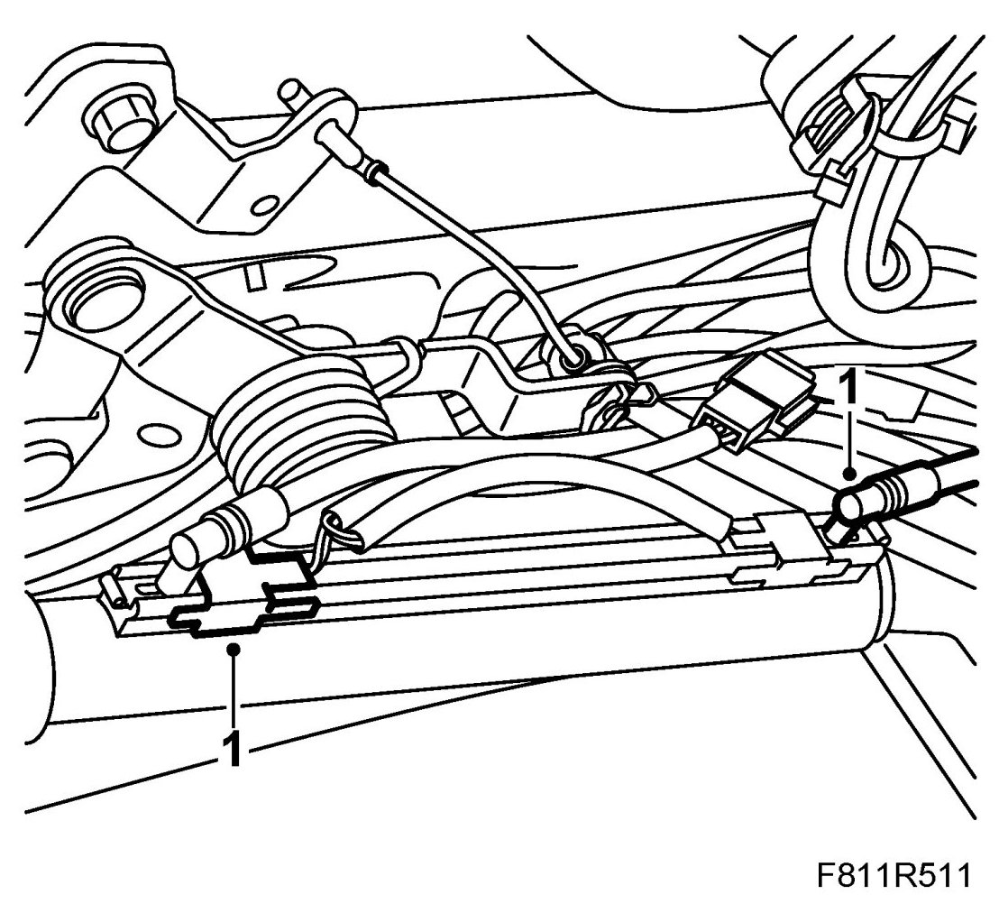
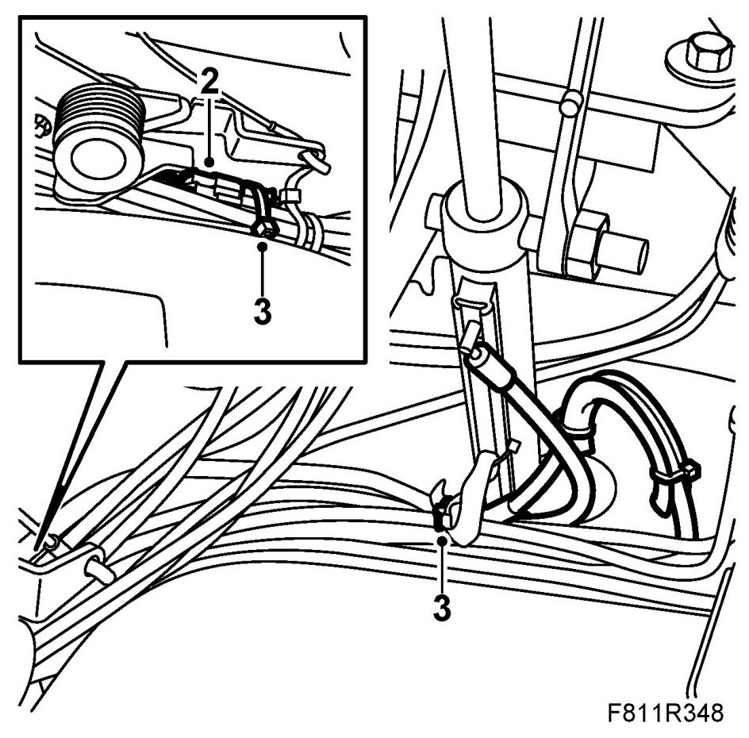
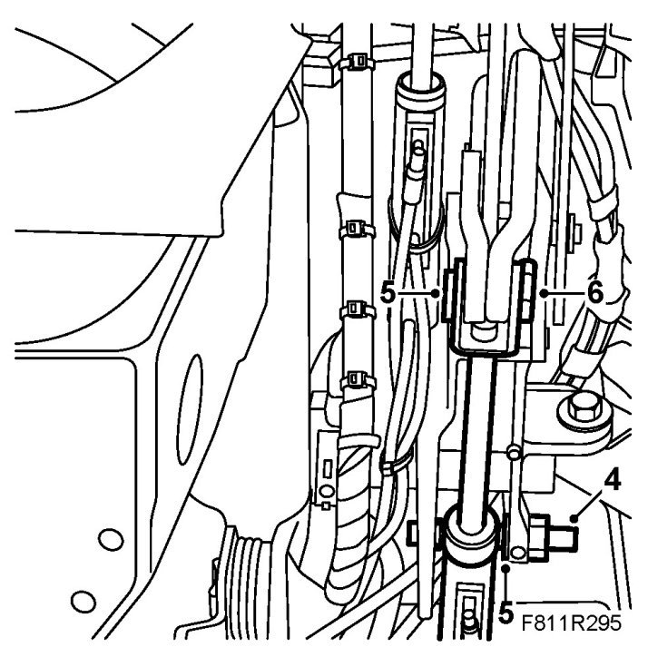

Position Sensor, Soft Top Raised and Soft Top Lowered (577c/o)
Position Sensor, Soft Top Raised And Soft Top Lowered (577c/o)
To remove
Only the hydraulic cylinder on the right-hand side of the car has two position sensors. Both position sensors have one common black connector and can therefore only be changed together.
1. Open the soft top cover. Raise the sixth bow and support it with 82 93 847 Soft top support.
2. Remove the clip from the cylinder piston rod fastening pin.

3. Remove the pin from the cylinder piston rod.
4. Remove the clip from the outer fastening pin in the hydraulic cylinder.
5. Remove the outer pin (by the spanner flats).
6. Pull the cylinder to the side so that it goes free of the inner pin (which is fixed)
7. Open the cable tie for the position sensor cable.

8. Remove the position sensor cable connector (black).
IMPORTANT: Mark the position sensors and their positions on the hydraulic cylinder as they must absolutely not be confused.
9. Use a screwdriver to carefully loosen the two position sensors from the hydraulic cylinder. Move the hydraulic line to one side at the same time.

To fit
1. Put the position sensors in mounting position on the hydraulic cylinder and fit them. Move the hydraulic line slightly to one side at the same time.

2. Connect the position sensor cable connector.

3. Fit the cable ties for the position sensor cable.
4. Fit the cylinder to the inner fastening pin. Press in the outer pin (by the spanner flats) and fit the lock.

5. Fit the pin to the cylinder piston rod.
6. Fit the lock to the fastening pin.
7. Remove the soft top support and close the soft top.
8. Test the operation of the soft top.
9. Connect the diagnostics tool and erase any diagnostic trouble code.